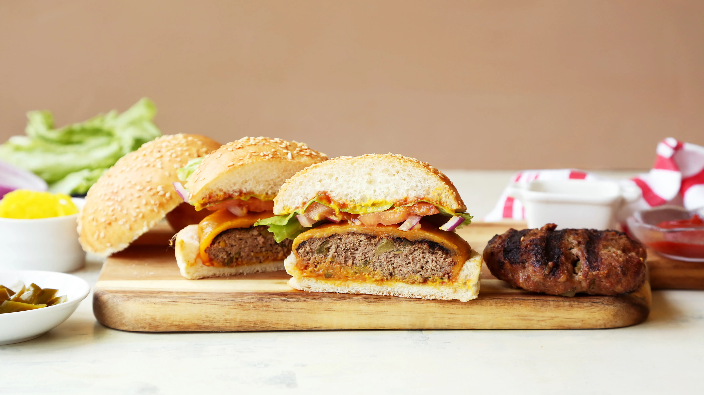

The Perfect Burger

Description
Here are the ingredients & the instructions to make the perfect burger! Although it may not be the healthiest, use medium ground beef for moistness & flavour. The leaner varieties produce burgers that are drier with a denser, tighter texture. Don't use previously frozen meat as juices are lost during defrosting.
If making ahead, cover with plastic wrap & refrigerate for no more than a day. Enjoy!
Ingredients
- 1 egg
- 1 teaspoon mustard
- 1 teaspoon Worcestershire sauce
- 1 small onion, finely grated
- 1 clove garlic, minced
- 1/2 teaspoon salt
- 1/2 teaspoon pepper
- 1 lb medium ground beef
Steps
- Lightly oil grill & heat BBQ to medium.
- Whisk egg in a bowl& add next 6 ingredients.
- Crumble in beef & using your hands or a fork, gently mix together.
- Handle the meat as little as possible. The more you work it, the tougher it gets.
- Gently shape (don't firmly press) mixture into burgers about ¾ inch thick.
- Using your thumb, make a shallow depression in the centre of each burger to prevent puffing up during cooking.
- Place burgers on the grill, close lid& BBQ until NO LONGER PINK INSIDE, turning once, about 6-8 minutes per side.
- An instant read thermometer should read 160F.
- Don't abuse your burgers by pressing with a spatula, pricking with a fork or turning frequently as precious juices will be lost!
- Tuck into a warm crusty bun & add your favourite toppings.